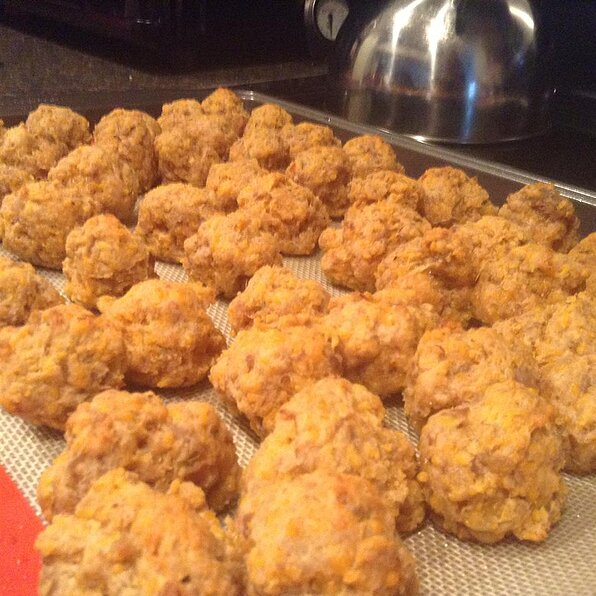

Sausage Balls

Description
In many households sausage balls are a classic holiday appetizer. But many of you might be thinking:
"Wait, what even is a sausage ball?!" The answer: Addictive bites of cooked pork sausage, cheddar,
and Bisquick that will be the most popular appetizer at your party. Just make sure your guests finish
them otherwise you'll be popping these bad boys for days after your party ends.
Ingredients
- 1 pound ground pork sausage
- 2 cups biscuit baking mix
- 1 pound sharp Cheddar cheese, shredded
Steps
- Preheat oven to 350 degrees F (175 degrees C).
- In a large bowl, combine sausage, biscuit baking mix and cheese. Form into walnut size balls and place on baking sheets.
- Bake in preheated oven for 20 to 25 minutes, until golden brown and sausage is cooked through.
Home